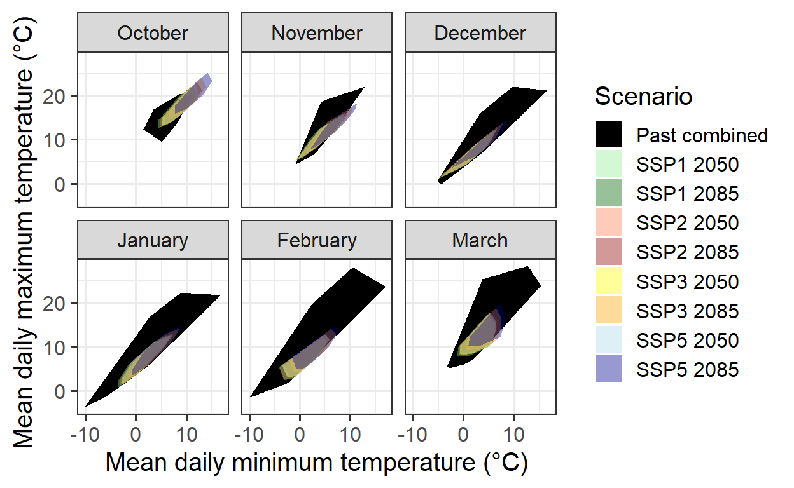
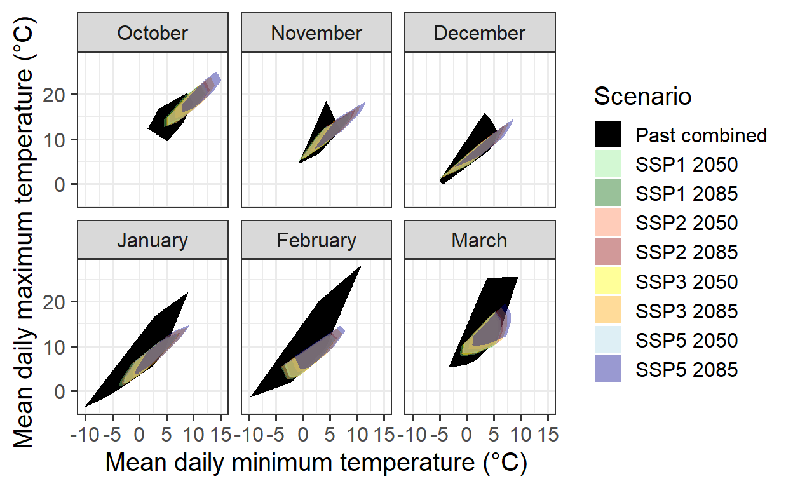
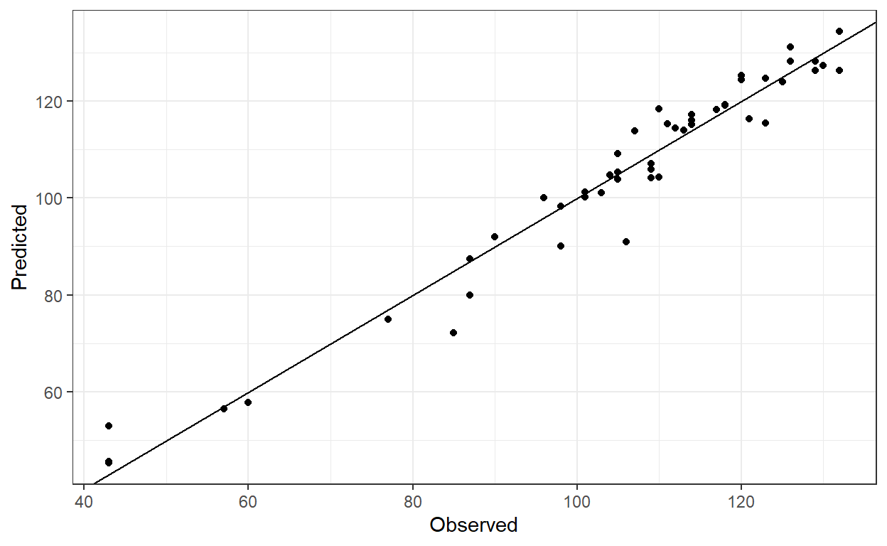
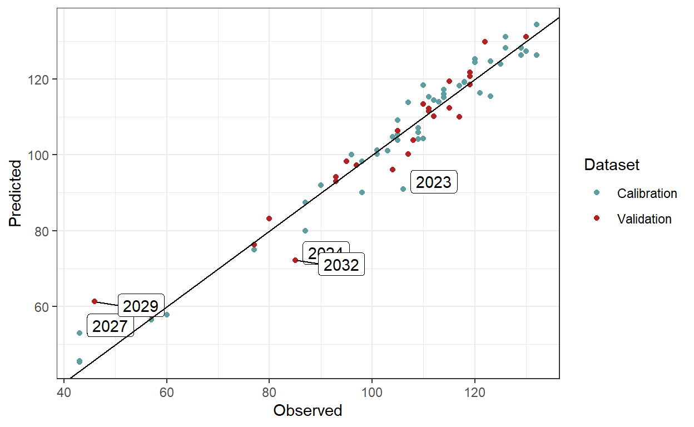
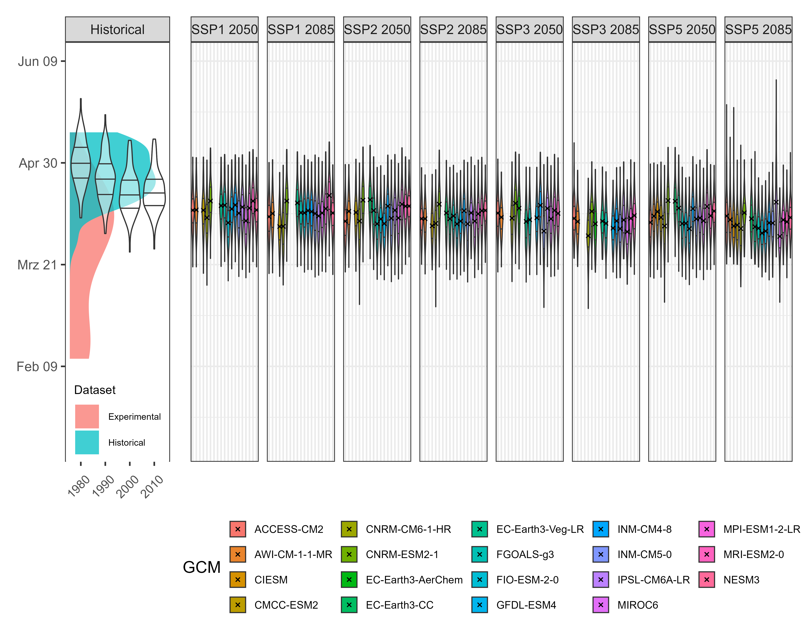
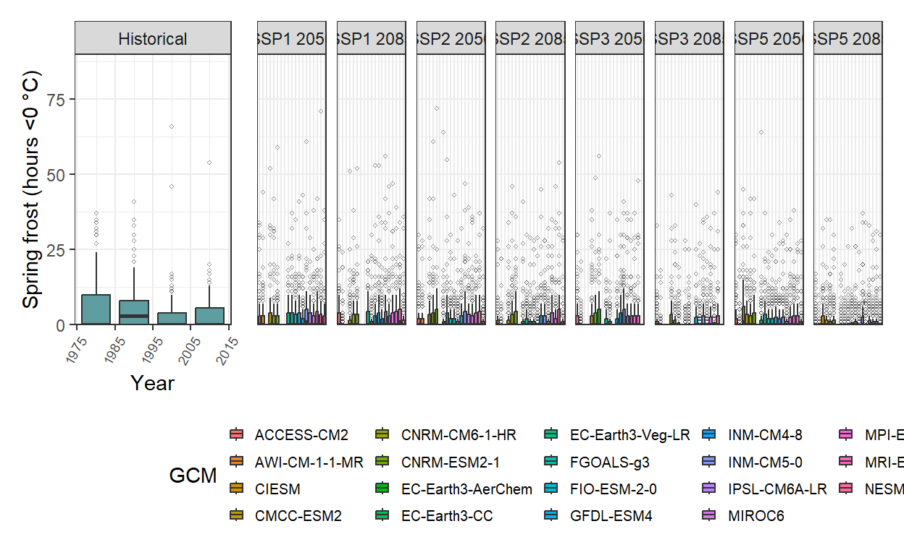

Assessing spring frost risk in temperate fruit trees is crucial but insufficient for planning future adaptation. A comprehensive approach must estimate both the probability and severity of future frost events under climate change.
Spring frost risk depends on temperature thresholds affecting plant tissues and the temperature-driven progression of tree phenology. Sensitivity increases as trees develop, with timing varying by species, cultivar, and location. Reliable analysis requires robust temperature projections and accurate bloom date modeling. Advances like future temperature scenarios and the PhenoFlex model enhance predictions.
Historical data from Campus Klein-Altendorf is combined with simulated conditions to assess relevance for future climates. The following plot illustrates this approach:
# Import the past weather dataset to build the hull plots for model validity domains
# Note: data from 01.01.1958 to 20.06.2019. Not complete season for bloom in 1958 (missing Oct-Dec 1957). Barely passing the threshold for bloom in 2019 (need to set mrange to c(9, 5) in genSeasonList for PhenoFlex calibration)
past_weather <- read_tab("data/TMaxTMin1958-2019_patched.csv")
# Add the column SSP_Time for further discrimination with future scenarios
past_weather$SSP_Time <- "Past"
# Summarize the data by month. Compute the mean of Tmin and Tmax by RCP_Time, Year, and Month
past_months <- past_weather %>%
group_by(SSP_Time, Year, Month) %>%
summarize(Tmin = mean(Tmin, na.rm = TRUE),
Tmax = mean(Tmax, na.rm = TRUE))
unstructured_future_temps <- load_temperature_scenarios("data/future_climate",
"Bonn_futuretemps")
future_temps <-
data.frame(bind_rows(lapply(unstructured_future_temps, bind_rows),
.id = "List"))
future_temps <- future_temps %>%
mutate(GCM = strsplit(List, '\\.') %>%
map(3) %>%
unlist(),
SSP = strsplit(List, '\\.') %>%
map(2) %>%
unlist(),
Time = strsplit(List, '\\.') %>%
map(4) %>%
unlist()) %>%
select(DATE, Year, Month, Day, Tmin, Tmax, SSP, Time, GCM)
future_temps[future_temps$SSP == "ssp126","SSP_Time"] <-
paste("SSP1", future_temps[future_temps$SSP == "ssp126","Time"])
future_temps[future_temps$SSP == "ssp245","SSP_Time"] <-
paste("SSP2", future_temps[future_temps$SSP == "ssp245","Time"])
future_temps[future_temps$SSP == "ssp370","SSP_Time"] <-
paste("SSP3", future_temps[future_temps$SSP == "ssp370","Time"])
future_temps[future_temps$SSP == "ssp585","SSP_Time"] <-
paste("SSP5", future_temps[future_temps$SSP == "ssp585","Time"])
# Summarize the data by month. Compute the mean of Tmin and Tmax by RCP_Time, Year, and Month
future_months <- future_temps %>%
group_by(SSP_Time, Year, Month) %>%
summarize(Tmin = mean(Tmin, na.rm = TRUE),
Tmax = mean(Tmax, na.rm = TRUE))
# Merge the past and future months to plot them together
all_months <- rbind(past_months,
future_months)
# Add a column for the name of the month
all_months$month_name <- factor(all_months$Month,
levels = c(6 : 12, 1 : 5),
labels = month.name[c(6 : 12, 1 : 5)])
# Calculate the hulls for each group
hull_temps <- all_months %>%
group_by(SSP_Time, month_name) %>%
slice(chull(Tmin, Tmax))
# Load the weather data from the experimental seasons to generate an "Enhanced" temps category
enhanced <- read_tab("data/final_weather_data_S1_S2_pear_hourly.csv")
# Summarize the data. Compute the minimum and maximum records in a daily basis
enhanced <- enhanced %>% group_by(YEARMODA, Treatment, Year, Month ) %>%
summarize(Tmin = min(Temp, na.rm = TRUE),
Tmax = max(Temp, na.rm = TRUE))
# Summarize the data by month now. Compute mean across minimum and maximum records
enhanced <- enhanced %>% group_by(Treatment, Month) %>% summarize(Tmin = mean(Tmin),
Tmax = mean(Tmax))
# Re-format the column Year and add the column RCP_Time
enhanced$Year <- enhanced$Treatment
enhanced$SSP_Time <- "Past_enhanced"
# Combining the past and the enhanced temps
past_months$SSP_Time <- "Past combined"
enhanced$SSP_Time <- "Past combined"
# Merge all the data. Simulated scenarios, observed scenarios, and enhanced temps
all_months_both <- rbind(enhanced, past_months, future_months)
# Add the labels for the month no
all_months_both$month_name <- factor(all_months_both$Month, levels = c(6 : 12, 1 : 5), labels = month.name[c(6 : 12, 1 : 5)])
# Create the hull
hull_temps_both <- all_months_both %>% group_by(SSP_Time, month_name) %>% slice(chull(Tmin, Tmax))
# Remove the temperature for the treatments excluded from the analysis. These treatments may be a bit unrealistic and therefore
# difficult to be explained by the model
all_months_both_conference <- filter(all_months_both, !(Year %in% c(3, 8, 9, 12, 13, 14, 15, 19,
23, 25, 26, 27, 28, 29, 32)))
# Create the hull again
hull_temps_both_conference <- all_months_both_conference %>%
group_by(SSP_Time,month_name) %>%
slice(chull(Tmin, Tmax))
write.csv(hull_temps_both,"data/hull_temps_both.csv",row.names = FALSE)
write.csv(hull_temps_both_conference, "data/hull_temps_both_conference.csv",row.names = FALSE)hull_temps_both <- read_tab("data/hull_temps_both.csv")
hull_temps_both$month_name <-
factor(hull_temps_both$Month,
levels = c(6:12, 1:5),
labels = month.name[c(6:12, 1:5)])
# Implement the plot showing the overlap among conditions
ggplot(hull_temps_both[which(hull_temps_both$Month %in% c(10,11,12,1,2,3)),],
aes(Tmin, Tmax, fill = factor(SSP_Time))) +
geom_polygon() +
facet_wrap(vars(month_name)) +
scale_fill_manual(name="Scenario",
breaks=c("Past combined",
"SSP1 2050",
"SSP1 2085",
"SSP2 2050",
"SSP2 2085",
"SSP3 2050",
"SSP3 2085",
"SSP5 2050",
"SSP5 2085"),
values=c("black",
alpha("light green",0.4),
alpha("dark green",0.4),
alpha("coral",0.4),
alpha("dark red",0.4),
alpha("yellow",0.4),
alpha("orange",0.4),
alpha("light blue",0.4),
alpha("dark blue",0.4))) +
xlab("Mean daily minimum temperature (°C)") +
ylab("Mean daily maximum temperature (°C)") +
theme_bw(base_size = 15)
This convex-hull plot shows the temperature coverage at CKA from 1958 to 2019, alongside all experimental seasons analyzed in the Experimentally Enhanced PLS chapter.
To integrate historical and experimental data into phenology modeling, records from the same species and cultivar (pear cultivar ‘Conference’) are required. Historical full bloom records for this cultivar exist from 1958 to 2019. However, to avoid distortions from extreme warming treatments, the experimental data used in the convex-hull plot may need refinement by excluding unusually warm seasons.
The following plot presents an updated version without these extreme conditions:

The coverage remains incomplete, as data for October and November is missing. Filling this gap is challenging since warmer conditions were not included in the experiments during these months.
The analysis will continue with the available data, anticipating that future identification of ‘normal seasons’ in the experimental dataset will improve the modeling domain’s validity.
Next, the PhenoFlex dormancy modeling framework will be implemented by integrating historical and experimental records. The following code chunk imports and formats the data for model calibration.
# Import the phenology data for the historical period 1958-2019
# Note that we are selecting only the Year and full bloom columns
historic_pheno_conference <-
read_tab("data/Pheno_pear_conference_1958_2019.csv")[c("Year",
"Full_bloom")]
# Remove missing years
historic_pheno_conference <-
historic_pheno_conference[which(!historic_pheno_conference$Full_bloom==""),]
# Add a column for the JDay
historic_pheno_conference$Full_bloom <-
dormancyR::date_to_JDay(date = as.Date(historic_pheno_conference$Full_bloom,
format = "%d.%m.%Y"),
format = "%Y-%m-%d")
# Rename the columns
colnames(historic_pheno_conference) <- c("Year", "pheno")
# Do the same for the weather data
past_weather <- read_tab("data/TMaxTMin1958-2019_patched.csv")
# Create hourly temps for compatibility with the experimental data set
past_weather <- stack_hourly_temps(weather = past_weather,
latitude = 50.4)[["hourtemps"]]
# Load the experimental data
# Load the data from the folder
exp_weather <- read_tab("data/final_weather_data_S1_S2_pear_hourly.csv")
# Generate a new column (Year_2) to simulate the year and comply with the format of PhenoFlex functions
exp_weather["Year_2"] <- exp_weather$Treatment + exp_weather$Year + 3
# Since this experiment was conducted during two consecutive seasons, the next step will fix a small continuity issue
# generated during the season 2
exp_weather[exp_weather$Treatment >= 17, "Year_2"] <-
exp_weather[exp_weather$Treatment >= 17, "Year_2"] - 1
# For further compatibility, I will now select the columns needed and will drop "Year" (the original one)
exp_weather <- exp_weather[c("YEARMODA",
"Year_2",
"Month",
"Day",
"Hour",
"JDay",
"Temp")]
# To replace the missing "Year" column, I will now change the name of the column
colnames(exp_weather)[which(colnames(exp_weather) == "Year_2")] <- "Year"
# Import the phenology data from the repository
exp_pheno <- read_tab("data/final_bio_data_S1_S2_pear.csv")
exp_pheno["Treatment"] <- exp_pheno$Treatment + 2019 + 3
# Remove conflictive treatments
exp_pheno <- exp_pheno[!(exp_pheno$Treatment %in% c(2025, 2030, 2031, 2034, 2035, 2036, 2037, 2041,
2045, 2047, 2048, 2049, 2050, 2051, 2054)),
c("Treatment", "pheno")]
# Rename the columns to match the names of the historical dataset
colnames(exp_pheno) <- c("Year", "pheno")
# Merge the historical and experimental phenology data
pheno_merged <- bind_rows(filter(historic_pheno_conference, Year != 1958),
exp_pheno)
# Merge the historical and experimental phenology data
weather_merged <- bind_rows(past_weather[, colnames(past_weather) %in% names(exp_weather)],
exp_weather)The historical and experimental data for phenology and weather records are now combined into a single dataset. The same procedure used in the chapter Can we improve the performance of PhenoFlex? can be applied to fit the PhenoFlex parameters to the data.
# Define the season used for calibration and validation in the PhenoFlex modelling approach
calibration_seasons <- sort(sample(pheno_merged$Year, 50, replace = FALSE))
validation_seasons <- sort(pheno_merged[!(pheno_merged$Year %in% calibration_seasons), "Year"])
# Define the list of seasons (weather data)
weather_season_list <- genSeasonList(weather_merged, mrange = c(9, 5), years = calibration_seasons)The PhenoFlex model fitting procedure can now be applied, following the approach outlined in The PhenoFlex Model chapter. Initially, wide parameter ranges—particularly for yc and zc—are used to let the model determine optimal estimates. The fitted parameters and predicted bloom dates are then saved in the data folder.
# Set the initial parameters (wide ranges)
# yc, zc, s1, Tu, E0, E1, A0, A1, Tf, Tc, Tb, slope
lower <- c(20, 100, 0.1, 0, 3000.0, 9000.0, 6000.0, 5.e13, 0, 0, 0, 0.05)
par <- c(40, 190, 0.5, 25, 3372.8, 9900.3, 6319.5, 5.939917e13, 4, 36, 4, 1.60)
upper <- c(80, 500, 1.0, 30, 4000.0, 10000.0, 7000.0, 6.e13, 10, 40, 10, 50.00)
# Run the fitter
pheno_fit <- phenologyFitter(par.guess = par,
modelfn = PhenoFlex_GDHwrapper,
bloomJDays = pheno_merged[pheno_merged$Year %in%
calibration_seasons, "pheno"],
SeasonList = weather_season_list,
lower = lower,
upper = upper,
control = list(smooth = FALSE,
verbose = FALSE,
maxit = 2000,
nb.stop.improvement = 20))
# Save the resulting parameters to folder (to avoid having to run the phenology fitter again)
write.csv(pheno_fit$par, "data/PhenoFlex_hist_exp_pear.csv", row.names = FALSE)
# Save the results of the predicted phenology for the calibration seasons
write.csv(data.frame(pheno_merged[pheno_merged$Year %in% calibration_seasons, ],
"Predicted" = pheno_fit$pbloomJDays), "data/PhenoFlex_hist_exp_predicted_bloom_pear.csv",
row.names = FALSE)The results of the fitting procedure can now be examined. By using the fitted parameters in the model, the prediction error can be assessed by comparing the predicted bloom dates with the observed ones.
# Read the parameters
params <- read.csv("data/PhenoFlex_hist_exp_pear.csv")[[1]]
# Generate a data set to collect the outputs of the fitting for the calibration data
out_df <- read_tab("data/PhenoFlex_hist_exp_predicted_bloom_pear.csv")
# Compute the error (observed - predicted)
out_df[["Error"]] <- out_df$pheno - out_df$PredictedModel performance metrics can now be computed based on the estimated prediction errors. While not crucial during calibration, these metrics provide insight into the success of the calibration attempt.
Although there is room for improvement—considering that only 10 iterations of the fitting procedure were used—the calibration still results in a relatively small RMSEP. A plot of the results will help visualize the overall performance.
# Plot the results to see the overall fitting
ggplot(out_df, aes(pheno, Predicted)) +
geom_point() +
geom_abline(intercept = 0, slope = 1) +
labs(x = "Observed") +
theme_bw()
This is a good initial calibration, but it may be worthwhile to test different par.guess values and adjust other arguments within phenologyFitter() to improve the model calibration.
Next, the model’s ability to predict bloom dates for seasons outside the calibration dataset should be evaluated. This requires extracting the model parameters and using the PhenoFlex_GDHwrapper() function to perform the predictions.
# Generate a validation data set with phenology data
valid_df <- pheno_merged[pheno_merged$Year %in% validation_seasons, ]
# Generate a list of seasons with weather data for the validation procedure
valid_season_list <- genSeasonList(weather_merged, mrange = c(9, 7),
years = validation_seasons)
# Estimate the bloom dates with PhenoFlexGDHwrapper
for (i in 1 : nrow(valid_df)) {
valid_df[i, "Predicted"] <- PhenoFlex_GDHwrapper(valid_season_list[[i]],
params)
}
# Compute the error (observed - predicted)
valid_df[["Error"]] <- valid_df$pheno - valid_df$PredictedSince the prediction error (the difference between observed and predicted values) in the validation dataset is known, model performance metrics such as RMSEP and RPIQ can be estimated. The RMSEP() and RPIQ() functions from the chillR package can be used for this purpose.
| Metric | Calibration | Validation |
|---|---|---|
| RMSEP | 4.72 | 5.34 |
| RPIQ | 4.50 | 4.12 |
The table results suggest that the PhenoFlex model performs well in predicting pear tree bloom dates under future conditions. To enhance robustness, multiple PhenoFlex fittings should be conducted to lower RMSEP values. Additionally, reducing the number of experimental seasons may help minimize the influence of extreme values and narrow the range of observed conditions in the warmer part of the model’s validity domain.
Further errors may stem from merging datasets collected using different methodologies, such as mature orchard trees versus young potted trees, or variations in observers across experiments. The fitting outcomes are analyzed below, with labels marking seasons where the prediction error exceeds 10 days.
# Plot the validation and calibration results (highlight seasons with 10 or more days of error)
ggplot() +
geom_point(data = out_df, aes(pheno, Predicted, color = "Calibration")) +
geom_point(data = valid_df, aes(pheno, Predicted, color = "Validation")) +
ggrepel::geom_label_repel(aes(pheno, Predicted, label = Year),
data = filter(out_df, abs(Error) > 10), nudge_y = 2, nudge_x = 6) +
ggrepel::geom_label_repel(aes(pheno, Predicted, label = Year),
data = filter(valid_df, abs(Error) > 10), nudge_y = -1, nudge_x = 9, force = 4) +
scale_color_manual(values = c("cadetblue", "firebrick")) +
geom_abline(intercept = 0, slope = 1) +
labs(x = "Observed",
color = "Dataset") +
theme_bw()
If the validation approach is deemed satisfactory, the fitted parameters from previous model runs can be used to predict bloom dates under future scenarios. This involves utilizing the data from the Future Temperature Scenarios chapter, which has already been loaded into R for generating the convex-hull plots.
The function PhenoFlex_GDHwrapper() will be applied to estimate bloom dates under future conditions. The initial steps within the for loop ensure proper data formatting by deriving hourly temperature records with stack_hourly_temps() and defining the seasons using genSeasonList().
# Create a primer data frame to allocate the results for future bloom
future_bloom <- future_temps %>%
group_by(SSP_Time,
GCM,
Year) %>%
summarise(Pheno = NA)
# Define the scenarios to be used in the for loop
scenarios <- unique(future_temps$SSP_Time)
# Define the climate models to be used in the for loop
climate_models <- unique(future_temps$GCM)
# Implement the for loop
for (scenario in scenarios){
scen_file <- future_temps %>%
filter(SSP_Time == scenario)
climate_models <- unique(scen_file$GCM)
for (climate_model in climate_models){
# Subset a temporary data frame according to scenario and climate model
# and generate hourly temperatures
temp_df <- filter(scen_file,
GCM == climate_model) %>%
stack_hourly_temps(latitude = 50.4)
# Define the saeasons to be used for predicting the phenology
temp_seasons_list <- genSeasonList(temp_df$hourtemps,
mrange = c(9, 7),
years = c(2002 : 2101))
# Change the names of the list of seasons to be used as index in the next for loop
names(temp_seasons_list) <- 2002 : 2101
# Implement a for loop that runs over the list of seasons to estimate the bloom date using the parameters fitted by the
# model
for (i in 1 : length(temp_seasons_list)){
# Add the bloom date to the primer data set
future_bloom[future_bloom$SSP_Time == scenario &
future_bloom$GCM == climate_model &
future_bloom$Year == names(temp_seasons_list)[i],
"Pheno"] <-
PhenoFlex_GDHwrapper(temp_seasons_list[[i]],
params)
}
}
}The same procedure can now be applied to estimate bloom dates for historically simulated scenarios.
# Bloom for past simulated scenarios ####
# Load the historical simulated scenarios
temps_past_scenarios <- load_temperature_scenarios("data",
"Bonn_hist_scenarios")
# Create a single dataset for all the simulated years
temps_past_scenarios <- bind_rows(temps_past_scenarios,
.id = "Scen_year")
# Make a primer dataset to allocate the results of the bloom projection
simulated_bloom <- temps_past_scenarios %>%
group_by(Scen_year, Year) %>%
summarise(Pheno = NA)
# Define the scenario years to be used in the loop
scen_years <- unique(simulated_bloom$Scen_year)
# Implement the for loop
for (scen_year in scen_years){
# Subset a temporary data frame according to scenario and climate model
temp_df <- filter(temps_past_scenarios,
Scen_year == scen_year)
# Generate hourly temperatures in the temporary data frame
temp_df <- stack_hourly_temps(temp_df,
latitude = 50.4)
# Define the saeasons to be used for predicting the phenology
temp_seasons_list <- genSeasonList(temp_df$hourtemps,
mrange = c(9, 7),
years = c(2002 : 2101))
# Change the names of the list of seasons to be used as index in the next for loop
names(temp_seasons_list) <- 2002 : 2101
# Implement a for loop that runs over the list of seasons to estimate the bloom date using the parameters fitted by the
# model
for (i in 1 : length(temp_seasons_list)){
# Add the bloom date to the primer data set
simulated_bloom[simulated_bloom$Scen_year == scen_year &
simulated_bloom$Year == names(temp_seasons_list)[i],
"Pheno"] <-
PhenoFlex_GDHwrapper(temp_seasons_list[[i]],
params)
}
}
write.csv(simulated_bloom, "data/frost_simulated_bloom.csv", row.names = FALSE)A plot will now be created to illustrate likely bloom dates for historical and future scenarios, incorporating calibration data for the PhenoFlex model. Since the two datasets have different axes, the plotting process is complex and follows these steps:
Generate a violin plot for simulated bloom data from past scenarios.
Extract x and y axis limits using layer_scales().
Create a density plot of calibration data (distinguishing between historical and experimental data) and extract its data using ggplot_build().
Convert the extracted density data into numeric values that align with the year axis from the first plot.
Add this density data to the initial plot using geom_ribbon().
Plot future bloom data separately.
Merge both plots using the patchwork package.
Save the final plot as an image with ggsave().
Despite necessary adjustments and challenges in aligning both datasets, the resulting visualization effectively presents the intended comparison.
# Plot all bloom prediction results
# Plot showing the violins for historical simulated scenarios
past_simulated_plot <-
ggplot(data = simulated_bloom) +
geom_violin(
aes(x = Scen_year,
group = Scen_year,
y = Pheno),
linewidth = 0.35,
draw_quantiles = c(0.25, 0.5, 0.75),
alpha = 0.5) +
facet_grid(~ "Historical") +
theme_bw() +
theme(axis.title.x=element_blank(),
axis.title.y=element_blank(),
plot.background = element_rect(fill = "transparent"),
panel.background = element_blank(),
panel.grid = element_blank(),
aspect.ratio = 4)
past_xlim <- layer_scales(past_simulated_plot)$x$range$range
past_ylim <- layer_scales(past_simulated_plot)$y$range$range
# Make a density plot to show the distribution of the seasons used for calibration of the PhenoFlex modelling framework
# Create a dataframe with columns to be used in the plot
observed_bloom_calibration <-
data.frame(out_df,
Facet = "Past scenarios",
Dataset = if_else(out_df$Year > 2010,
"Experimental",
"Historical"))
# Make a density plot of the bloom dates included in the calibration dataset
gg_density_plot <-
ggplot() +
geom_density(data = observed_bloom_calibration,
aes(y = pheno,
fill = Dataset)
)
# Extract data from the plot
density_data <-
gg_density_plot %>%
ggplot_build() %>%
pluck(1,1) %>%
select(x:y,group)
# Scale data so that they can be plotted on the Year axis
density_data[density_data$group == 1, "Dataset"] <- "Experimental"
density_data[density_data$group == 2, "Dataset"] <- "Historical"
density_data <-
density_data %>%
mutate(density_scaled = x / max(x),
density_scaled = density_scaled * (past_xlim[2] -
past_xlim[1]) * 0.9 + past_xlim[1])
# merge the two plots (and plot the violin plot again, so that it's placed
# on top)
past_observed_plot <-
past_simulated_plot +
geom_ribbon(data = density_data,
stat = "identity",
position = "identity",
aes(xmin = past_xlim[1],
xmax = density_scaled,
y = y,
fill = Dataset),
alpha = 0.75) +
geom_violin(data = simulated_bloom,
aes(x = Scen_year,
group = Scen_year,
y = Pheno),
size = 0.35,
draw_quantiles = c(0.25, 0.5, 0.75),
alpha = 0.5) +
scale_y_continuous(limits = c(10,160),
labels = function (x)
format(dormancyR::JDay_to_date(x,
2001,
na.rm = TRUE),
"%b %d")) +
theme(legend.position = c(0.5, 0.1),
axis.text.x = element_text(size = 8,
angle = 45,
vjust = .4,
hjust = .6),
legend.text = element_text(size = 6),
legend.title = element_text(size = 8))
# Create a violin plot to show future bloom dates
future_bloom_plot <- ggplot(na.omit(future_bloom),
aes(GCM, Pheno, fill = GCM)) +
geom_violin(size = 0.35,
draw_quantiles = c(0.25, 0.75)) +
stat_summary(fun = "median",
geom = "point",
shape = 4,
size = 0.8) +
scale_y_continuous(limits = c(10, 160),
labels = function (x)
format(dormancyR::JDay_to_date(x,
2001,
na.rm = TRUE),
"%b %d")) +
facet_grid(~ SSP_Time) +
theme_bw() +
theme(legend.position = "bottom",
legend.key.size = unit(0.4, "cm"),
legend.text = element_text(size = 7),
axis.title = element_blank(),
axis.text = element_blank(),
axis.ticks = element_blank()
)
# Combine plots
library(patchwork)
past_observed_plot +
future_bloom_plot# Save the plot to the folder
ggsave("images/future_pheno_pear.png",
device = "png",
width = 19,
height = 15,
units = "cm",
dpi = 600)
The results indicate that bloom in pear cultivar ‘Conference’ is expected to occur slightly earlier under future climate scenarios. The next step is to assess the probability of frost events during the flowering period. To do this, a bloom period of 10 days around the predicted full bloom date for each simulated year will be considered, and temperature data during this period will be analyzed.
# Frost risk part ####
# Add the "buffer" around the estimated bloom dates to compute the number of hours below 0 °C in this period. Hypothetically, this represents the
# period of bloom in all scenarios
# Define the buffer only once
bloom_buffer <- 5
# Mutate the future bloom dataset to add the beggining and end for bloom
future_bloom <- future_bloom %>%
mutate(Beginning = Pheno - bloom_buffer,
End = Pheno + bloom_buffer)
# Do the same with the observed bloom dataset (i.e. calibration)
observed_bloom_calibration <- observed_bloom_calibration %>%
mutate(Beginning = pheno - bloom_buffer,
End = pheno + bloom_buffer)
# Same with the past simulated data from historical scenarios
simulated_bloom <- simulated_bloom %>%
mutate(Beginning = Pheno - bloom_buffer,
End = Pheno + bloom_buffer)The number of frost hours expected under future and historical simulated scenarios will now be computed using multiple for loops. This approach will allow for a detailed assessment of frost risk during the bloom period across different climate conditions.
for (i in 1 : nrow(observed_bloom_calibration)){
# Extract the beginning and end date for observed bloom
beg_bloom <- observed_bloom_calibration[i, "Beginning"]
end_bloom <- observed_bloom_calibration[i, "End"]
# Subset a temporary dataframe of weather records for the year of interest
temp_df <- filter(weather_merged,
Year == observed_bloom_calibration[i, "Year"])
# Add the Julian date
temp_df <- make_JDay(temp_df)
# Filter only the period for bloom
temp_df <- filter(temp_df,
JDay %in% c(beg_bloom : end_bloom))
# Calculate the number of hours below 0 °C
frost_hours <- max(dormancyR::frost_risk(temp_df$Temp,
threshold = 0))
# Add the number of hours to the original dataframe
observed_bloom_calibration[i, "Frost"] <- frost_hours
}The same procedure is applied to both past simulated and future scenarios.
# Make a primer dataset to allocate the results of the frost projections
simulated_frost <- temps_past_scenarios %>%
group_by(Scen_year, Year) %>%
summarise(Frost = NA)
# Implement the loop over scenario years and simulated years
for (scen_year in scen_years)
for (year in c(2002 : 2100)){
if(!is.na(filter(simulated_bloom,
Scen_year == scen_year &
Year == year)[["Pheno"]] ))
{
# Extract the beginning and end of the blooming period
beg_bloom <- filter(na.omit(simulated_bloom),
Scen_year == scen_year &
Year == year)[["Beginning"]]
beg_bloom <- trunc(beg_bloom)
end_bloom <- filter(na.omit(simulated_bloom),
Scen_year == scen_year,
Year == year)[["End"]]
end_bloom <- trunc(end_bloom)
# Filter the weather data according to the relevant scenario year and simulated year
temp_df <- filter(temps_past_scenarios,
Scen_year == scen_year &
Year == year)
# Derive hourly temperatures based on the latitude of Campus Klein-Altendorf
temp_df <- stack_hourly_temps(temp_df,
latitude = 50.4)[["hourtemps"]]
# Filter the relevant period when bloom is likely to occurs
temp_df <- filter(temp_df,
JDay %in% c(beg_bloom : end_bloom))
# Compute the number of frost hours
frost_hours <- max(dormancyR::frost_risk(temp_df$Temp,
threshold = 0))
} else frost_hours <- 0
# Add the number of frost events to the primer dataset
simulated_frost[simulated_frost$Scen_year == scen_year &
simulated_frost$Year == year, "Frost"] <- frost_hours
}
# Remove NA cells since the first year has no bloom
simulated_frost <- na.omit(simulated_frost)Next, the future scenarios are processed using the same methodology.
# Create a primer data frame to allocate the results for future bloom
future_frost <- future_temps %>%
group_by(SSP_Time, GCM, Year) %>%
summarise(Frost = NA)
# Implement the for loop
for (scenario in scenarios)
{scen_file <- future_bloom %>%
filter(SSP_Time == scenario)
climate_models <- unique(scen_file$GCM)
for (climate_model in climate_models)
for (year in c(2002 : 2100)){
if(!is.na(filter(scen_file,
GCM == climate_model &
Year == year)[["Pheno"]] ))
{
beg_bloom <- filter(na.omit(scen_file),
GCM == climate_model &
Year == year)[["Beginning"]]
beg_bloom <- trunc(beg_bloom)
end_bloom <- filter(na.omit(scen_file),
GCM == climate_model &
Year == year)[["End"]]
end_bloom <- trunc(end_bloom)
# Derive hourly temperatures based on the latitude of Campus Klein-Altendorf
temp_df <- filter(future_temps,
SSP_Time == scenario &
GCM == climate_model &
Year == year)
temp_df <- stack_hourly_temps(temp_df,
latitude = 50.4)[["hourtemps"]]
temp_df <- filter(temp_df,
JDay %in% c(beg_bloom : end_bloom))
frost_hours <- max(dormancyR::frost_risk(temp_df$Temp,
threshold = 0))
} else frost_hours <- 0
future_frost[future_frost$SSP_Time == scenario &
future_frost$GCM == climate_model &
future_frost$Year == year, "Frost"] <- frost_hours
}
}
# Remove NA cells since the first year has no bloom
future_frost <- na.omit(future_frost)Now, the results are visualized using a standard approach for displaying agro-climatic projections. Two separate plots are generated—one for past simulated scenarios and one for future projections—and then combined using the patchwork package to provide a comprehensive overview of frost risk trends.
# Plots
past_frost_plot <- ggplot(simulated_frost,
aes(Scen_year,
Frost,
group = Scen_year)) +
geom_boxplot(fill = "cadetblue",
outlier.size = 0.8,
outlier.alpha = 0.5,
outlier.shape = 1) +
#geom_point(data = observed_bloom_calibration, aes(as.character(Year), Frost)) +
scale_y_continuous(limits = c(0, 90),
expand = expansion(mult = 0)) +
labs(x = "Year",
y = "Spring frost (hours <0 °C)") +
facet_grid(~ "Historical") +
theme_bw() +
theme(axis.text.x = element_text(size = 7,
angle = 60,
hjust = 1))
future_frost_plot <- ggplot(future_frost,
aes(GCM,
Frost,
fill = GCM)) +
geom_boxplot(outlier.size = 0.8,
outlier.alpha = 0.5,
outlier.shape = 1) +
scale_y_continuous(limits = c(0, 90),
expand = expansion(mult = 0)) +
facet_grid(~ SSP_Time) +
theme_bw() +
theme(axis.title = element_blank(),
axis.text = element_blank(),
axis.ticks = element_blank(),
legend.position = "bottom",
legend.text = element_text(size = 7.5),
legend.key.size = unit(0.3, "cm"))
past_frost_plot +
future_frost_plot +
plot_layout(widths = c(0.25, 1))
An interesting observation is the high number of outliers present in each simulated scenario. Despite projections indicating an earlier bloom period for pear cv. Conference under future climate scenarios, the overall trend suggests a slight decline in the risk of spring frost events.